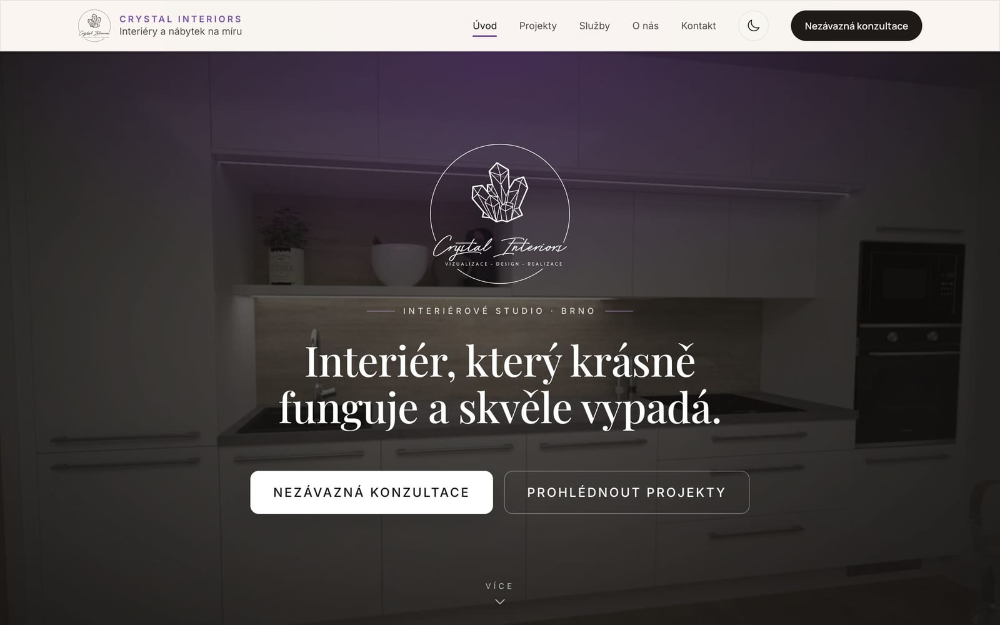
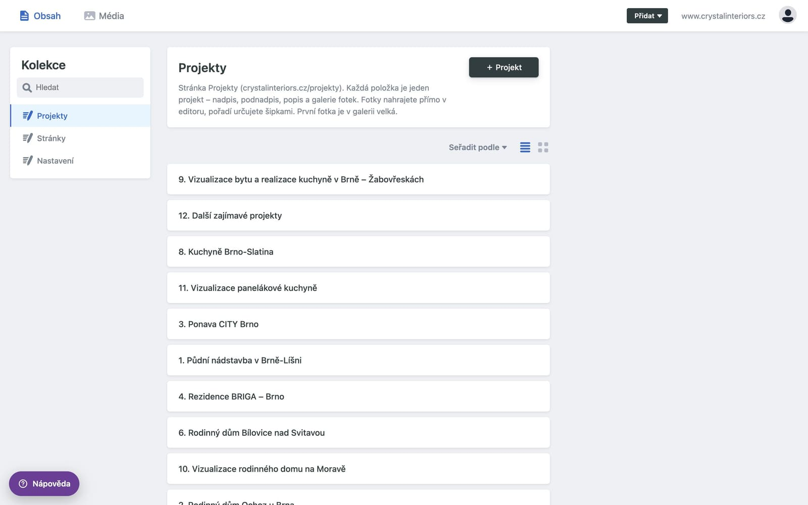
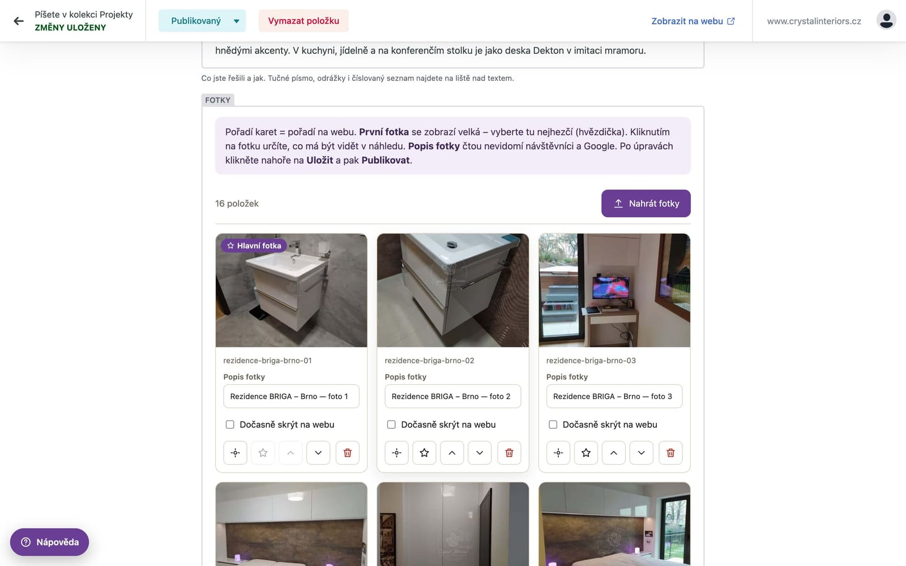
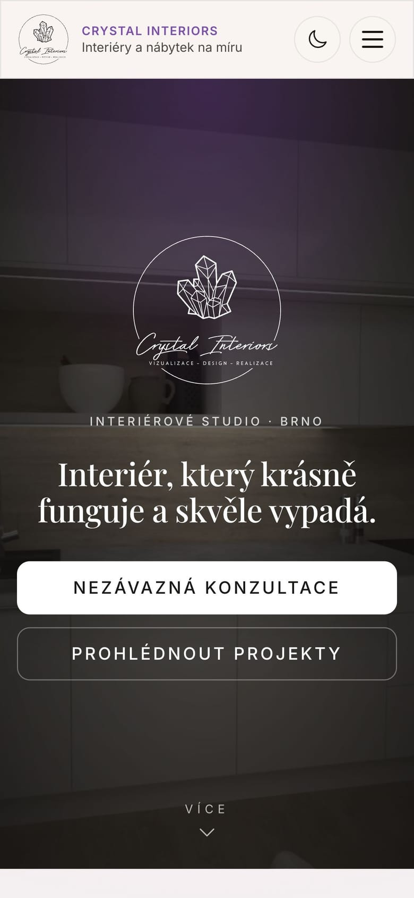

Srozumitelný přehled pro Lucii Vodákovou: co jsme oproti webu na Webnode změnili, které služby za webem stojí, jak web upravíte a co se děje s poptávkou zákazníka.

www.crystalinteriors.cz · říjen 2026 · připravil Lukáš Chylík (lukaschylik.dev)
Původní web byl postavený ve stavebnici Webnode. Nový web je postavený na míru: obsah vlastníte vy, je rychlejší, lépe ho najde Google a upravujete ho v jednoduché administraci.
| Dřív – Webnode | Teď – nový web | |
|---|---|---|
| Kde web „bydlí“ | Na serverech Webnode, jen v jejich stavebnici | Cloudflare – síť serverů po celém světě, návštěvník dostane web z nejbližšího místa |
| Úpravy obsahu | Editor Webnode | Vlastní administrace na www.crystalinteriors.cz/admin s průvodcem v češtině |
| Projekty | Jedna stránka s fotkami | 12 projektů s nadpisem, popisem a galerií; nový projekt přidáte sami |
| Fotky | Nahrané do Webnode | Prohlížeč je při nahrání sám zmenší a převede do moderního formátu AVIF; na mobilu se stahují malé verze |
| Poptávkový formulář | Formulář Webnode | Poptávka přijde oběma designérkám, zákazník dostane potvrzení e-mailem, ochrana proti robotům |
| Vyhledávače | Základní nastavení | Popisy pro Google a sociální sítě, náhledové obrázky, mapa webu, strukturovaná data o firmě a projektech |
| Záloha a historie | Omezený počet záloh | Každá změna je uložená zvlášť a dá se vrátit |
| Doména a e-maily | Webnode | Beze změny – zůstávají u Webnode (stránka 7) |
Měřeno nástrojem Google Lighthouse 21. 10. 2026 na stejném zařízení a připojení. Původní web: výkon 94 na mobilu.
Web se skládá z několika služeb. Každá dělá jednu věc a dělá ji dobře. Vy pracujete jen s administrací, zbytek se děje automaticky.
Přehled pro představu – do žádné z nich nemusíte chodit, vše ovládáte z administrace.
Co dělá: drží web a doručuje ho návštěvníkům z nejbližšího serveru, stará se o zabezpečení (HTTPS), po každém zveřejnění web sám znovu „postaví“. Po přesunu domény bude spravovat i adresu crystalinteriors.cz.
Přirovnání: výloha, která stojí v každém městě zároveň.
zdarmaCo dělá: bezpečně ukládá veškerý obsah webu – texty, projekty i fotky. Každá změna se zapíše zvlášť (kdo, kdy, co), takže jde cokoli vrátit. Slouží i k přihlášení do administrace.
Přirovnání: trezor s kronikou všech úprav.
zdarmaCo dělá: místo, kde upravujete texty, projekty, fotky, ceník, časté dotazy, kontakty i popisy pro Google. Česky, s průvodcem a tlačítkem Nápověda. Adresa: www.crystalinteriors.cz/admin.
Technicky Decap CMS – ověřený otevřený systém.
zdarmaCo dělá: odesílá e-maily z formuláře – poptávku vám oběma a potvrzení zákazníkovi. Odesílá pod vaší doménou ze serverů v EU, takže zprávy nepadají do spamu.
Přirovnání: spolehlivý pošťák jen pro formulář.
zdarma do 3 000 e-mailů / měsícCo zůstává: registrace domény crystalinteriors.cz a vaše e-mailové schránky (@crystalinteriors.cz). Pošta funguje přesně jako dosud.
Předplatné u Webnode proto nerušte – platí se z něj schránky a doména.
stávající předplatnéCo dělá: Tag Manager měří návštěvnost (stejný účet jako dřív), Search Console ukazuje, jak web vidí vyhledávač. Ověření v Search Console jsme přenesli ze starého webu.
Statistiky se načítají až po zobrazení stránky, web nezdržují.
zdarma

Schránky zůstávají u Webnode a fungují stejně jako dosud – v telefonu, v počítači i ve webmailu. Nic nenastavujete znovu.

Web na mobilu – menší fotky, velká tlačítka, světlý i tmavý režim.
Šifrované spojení (zámek v prohlížeči), do administrace se dostane jen pozvaný člověk přes svůj účet. Web nemá vlastní databázi ani hesla, která by šlo ukrást.
Každá zveřejněná změna je uložená v GitHubu. Kdyby se cokoli pokazilo, vrátí se předchozí verze během chvilky.
Obsah je ve standardních souborech. Web jde kdykoli přesunout k jinému poskytovateli bez přepisování.
Požádali jsme Webnode o přesun správy adresy crystalinteriors.cz pod Cloudflare (tzv. změna NSSET). Web už teď běží z Cloudflare, po přesunu bude pod Cloudflare i adresa bez „www“ a doplníme další zabezpečení (DNSSEC). Pro vás se nic nemění – web ani e-maily nevypadnou, všechna nastavení pošty jsou zkopírovaná. Doména i schránky dál zůstávají u Webnode.